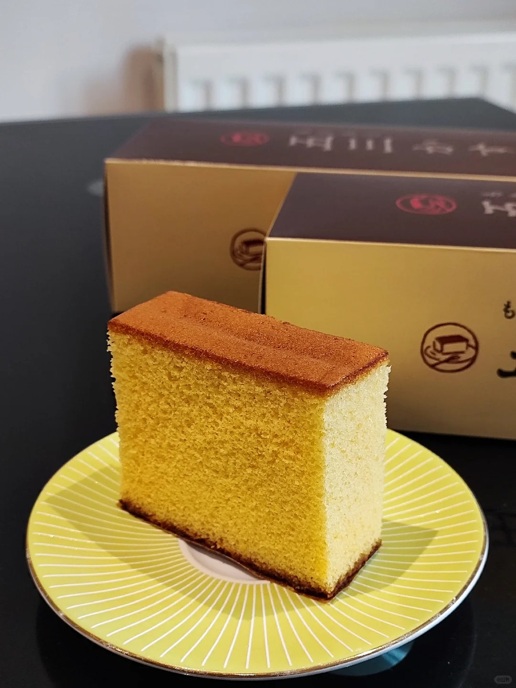
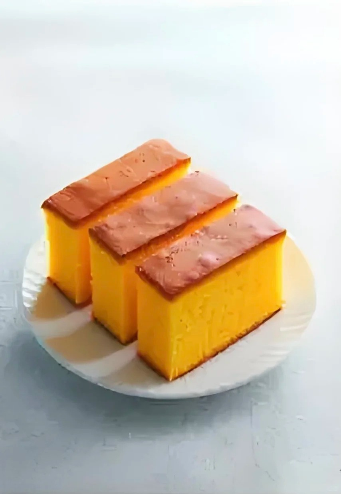

长崎蜂蜜蛋糕



长崎蜂蜜蛋糕是日本长崎县的传统甜点，日文为 “カステラ”，源自葡萄牙文 “Castella”，在古代日本，这种点心被统称为 “南蛮菓子”。传统的 “カステラ” 原本没有蜂蜜成分，后来有些店家为增添香气与甜度而加入蜂蜜提味，因此被称为长崎蜂蜜蛋糕。长崎蜂蜜蛋糕起源于 16 世纪，其原型是葡萄牙的 “Pão de Ló”。当时长崎是日本与西方贸易的枢纽，这种糕点从这里传入日本。进入江户时代，长崎的蜂蜜蛋糕开始作为馈赠品送给全国的大名和将军，并在长崎的老字号和菓子店的不断改进下，发展出具有日本特色的味道。长崎蜂蜜蛋糕具有松软湿润的口感，通过仔细搅拌打发的鸡蛋，使其拥有独特的质地。同时，它还带有浓郁的蛋香和高雅的甜味，底部粗糖的颗粒感也为其增添了独特的口感。 制作方法将鸡蛋加热后打发，加入糖继续打发，再筛入面粉拌匀，倒入铺有粗糖的模具中，放入预热好的烤箱烘烤而成。
制作方法：